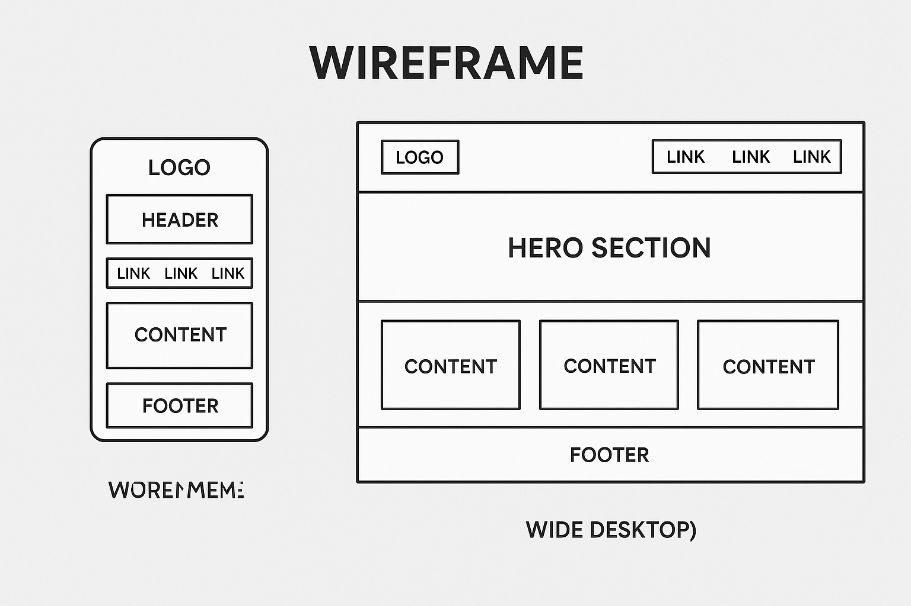

Site Name
Traditional Ghanaian Cuisine — This name clearly reflects the subject of the website and helps users understand the content focus immediately. It emphasizes the cultural and culinary heritage of Ghana.
Site Purpose
The purpose of this site is to share authentic Ghanaian dishes with a global audience. It will feature background stories of meals, cultural relevance, ingredients, and preparation steps. The site will serve as an educational and inspirational platform for food enthusiasts and Ghanaians abroad.
Scenarios
- How can I prepare Jollof rice like it’s made in Ghana?
- What traditional foods should I try when visiting Ghana?
Color Schema
- #b22222 – Deep Red: Used for headings and key accents (symbolizes warmth and tradition)
- #ffcc00 – Golden Yellow: Used for section dividers and highlight elements
- #fff8f0 – Light Beige: Background color for a soft, inviting look
- #333333 – Dark Gray: Standard body text for readability
Typography
- Georgia – Used for all headings for a formal, elegant appearance
- Open Sans – Used for all body text for clarity and ease of reading
- Courier New – Used in recipe or code-style content
Wireframes
The following wireframes illustrate the proposed layout of the homepage in both mobile and desktop views.
